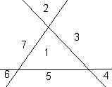
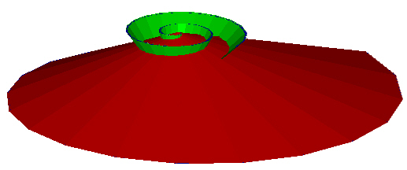

In his book The Vortex of Life, Lawrence Edwards shows how intersecting "vortices" can generate shapes which match very accurately the shapes of many plant buds, eggs, etc. And with additional parameters, can generate heart ventricle shapes, embryo development shapes, etc.
The mathematics Edwards uses is called Path Curves and is part of Projective geometry. In this mathematics, "space" is mapped into itself. That is, space is projected onto itself. This means that for any point in space, it gets moved to another point in space in a very specific way.
Before considering all space, let us look at just a plane. The plane is defined at minimum by 3 points. This defines a triangle and divides the plane into 7 regions: The area within the triangle, 3 regions beyond each of the 3 vertices of the triangle, and 3 regions adjacent to the 3 edges of the triangle.
| 
Figure 1: Triangle defines a plane and 7 regions. |
Although the Path Curve transformation effects all points in the entire plane, we will look only at the inner region of the triangle.
Then, we see that the points within the triangle seem to move along well defined curved paths.
|
Figure 2: Path Curves within the triangle. |
The important thing to note is that the re-arrangement of the points along these curves do not cross each other.
|
Figure 3: All points move along some curve. |
Also note that different points move by different amounts along the curves. In Figure 3 above, the point A gets moved to point B along a Path Curve. Point B gets moved to point C. The distance point A moves is not the same as the distance that point B moves.
This means that if before the transformation the space is isotropic (everywhere the same) then after the transformation, the space is not isotropic. There will be some regions where the points are now "more dense" than they were before the Path Curve transformation.
Next we consider what will happen to the Path Curves if we fix one vertex of the triangle (we'll label it "P.P." for pivot point) and 1) Extend the edges to infinity while also 2) Rotating the 2 edges connected to P.P. until they come together. In this way we sweep out the entire plane.
|
Figure 4: Extending out to infinity. |
What result is that the Path Curves become logarithmic spirals in the plane.
|
Figure 5: A Path Curve becomes a spiral in the plane. |
The entire plane now has a spiral characteristic to it.
|
Figure 6: All points move along Path Curves which are logarithmic spirals. |
What happens if we do a similar transformation to all points in space and not just to points in a plane?
We start by noting that 3D space is defined at minimum by a tetrahedron having 4 vertices, 4 triangular faces (planes) and 6 edges.
|
Figure 7: A Tetrahedron defines space. |
Again, we will only consider the space defined within the Tetrahedron.
At this point, I have no good way to show how the points within the Tetrahedron move when a Path Curve transformation is applied without resorting to the mathematics, which I choose not to do. See Edwards' book for more detail.
Although I can not pictorially show it at this point, the transformation of points within the Tetrahedron is determined by the Path Curves on 2 of the Tetrahedron's 4 triangular faces.
|
Figure 8: Path Curves on 2 of the faces. |
|
Figure 9: Path Curves on 2 of the faces. |
Before we go further with the Tetrahedron look what happend when we take a triangle and move one of its vertices out toward infinity. Then 2 edges become perpendicular to the 3rd, unchanging edge. In the Figure below, the angles alpha and beta tend toward 90 degrees as the vertex is moved to infinity.
|
Figure 10: Sides of a triangle become perpendicular. |
In a similar way, we will take an edge of the Tetrahedron and move it out toward infinity.
|
Figure 11: Moving a Tetrahedron edge out to infinity. |
In doing so, the opposite edge (labeled AB in the Figure) becomes an axis while planes ACD and BCD become parallel to each other.
|
Figure 12: Two faces become parallel. |
To each of the 2 triangular faces of the Tetrahedron, now parallel to each other, we extend their triangular edges and rotate the edges as we did to the triangle of Figure 4. This defines two parallel planes on which are logarithmic spirals.
|
Figure 13: Two planes with spirals and common central axis. |
Only two spirals are shown, but it is to be recalled that each plane consists of an infinite number of non-overlapping spirals. These spirals are indications of how the points in the planes move under the transformation.
What we are trying to understand is how all the points within the expanded-to-infinity Tetrahedron move. These are all the points between the two planes containning the two spirals.
I am only showing one pair of spirals to make the Figures easier to visualize. And, I am only showing the case in which the spirals in one of the planes is in the opposite direction to the the spirals in the other plane. For the other case, see Edward's book.
|
Figure 14: Two opposite spirals. |
Now, for the space between the 2 planes the mathematics defines spiral cones.
|
Figure 15: One of the Spiral Cones. |
|
Figure 16: One of the Spiral Cones. |
We now add the other, opposite Spiral cone.
|
Figure 17: Second Spiral Cone Added. |
|
Figure 18: Second Spiral Cone Added. |
|
Figure 19: Second Spiral Cone Added. |
|
Figure 20: Second Spiral Cone Added. |
If we now look at the intersection of just these two Spiral Cones, we get layers of shapes like the following.
|
Figure 21: Intersection of Spiral Cones. |
But we must remember that this is just for the 2 spirals, one in each plane. There is an infinite number of spirals in each plane and a corresponding infinite number of spiral cones defined in the space between these planes. We can model this by sweeping the intersection of the 2 spiral cones around the cone axis. we get the following shape.
|
Figure 22: Basic Shape from intersection Spiral Cones. |
Note that in this picture, I only used the outer most intersection "squiggle" of Figure 21 to generate the final shape. With each spiral there will be intersecting layers within layers like the layers of an onion, all embedded in one another.
There are many other details to explain but I wont go into them at this time.... Definitely check out Lawrence Edwards' book for the details.
So, we finally find that the space points move on surfaces. This may not seem like a lot, but lets look a little more.
What kind of shapes can we generate if you adjust the parameters? What happens if the two opposite twisting of space, the opposite spiral cones in the space, do not have the same degree of twist? This might look something like the following Figure.
| 
Figure 23: Different Spiral Rates. |
Then their intersection would be like this. (Actually, I flipped the result upside down so the result will be fatter on the bottom. You will see that the result looks good this way.)
|
Figure 24: Different Spiral Rates Intersections. |
And recalling that there is an infinite number of opposing spiral cones within the space, we spin the outer most intersection squiggle about the Spiral Cone axis to generate the following shape.
|
Figure 25: Different Spiral Rates. |
As you can easily see, the shape is now fatter on the bottom than on the top.
By adjusting the Path Curves spirals on the 2 planes, we can generate shapes that match many plant bud shapes, many egg shapes, etc.
But it should be noted that not all bud or egg shapes match. Different species match to a greater or lesser extent.
By introducing other parameters (motion to the Spiral Cone locations) many more biological forms can be generated.
Here, it appears, that we have a mathematics which can generate basic biological shapes which biological systems will grow into. And this is accomplished by intereseting spiral cones with differing twist parameters. It is as if there are competing, intersecting forces in the fabric of space which the biological system's sense and grow into.
The big question is "Is there really anything real to these Spiral Cones or is it all just mathematical bookkeeping which does not correspond to anything real?"
That is to be determined....